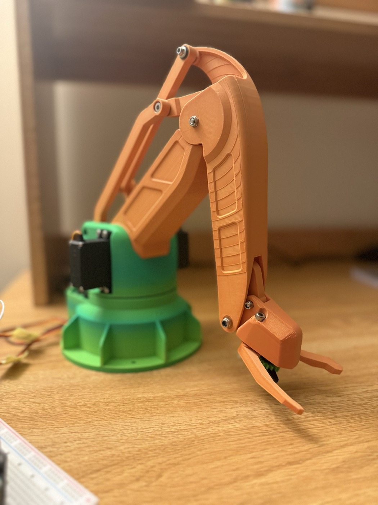
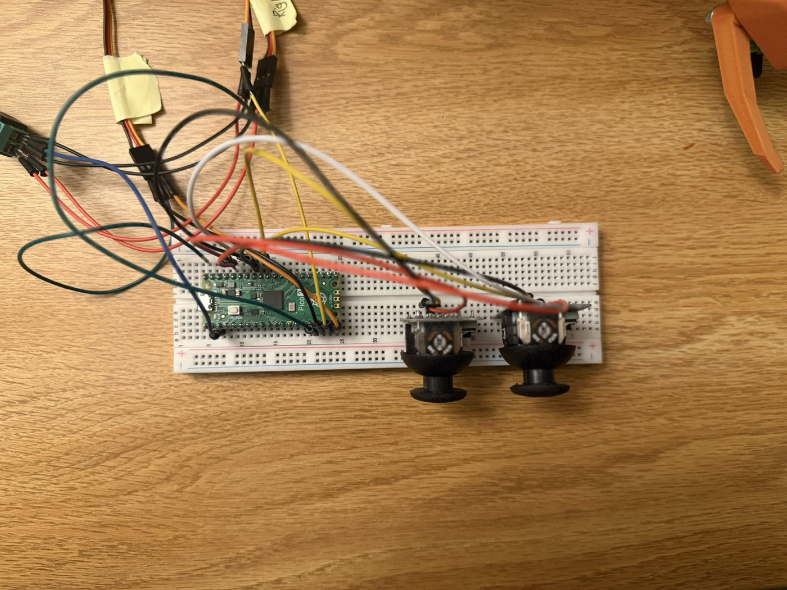
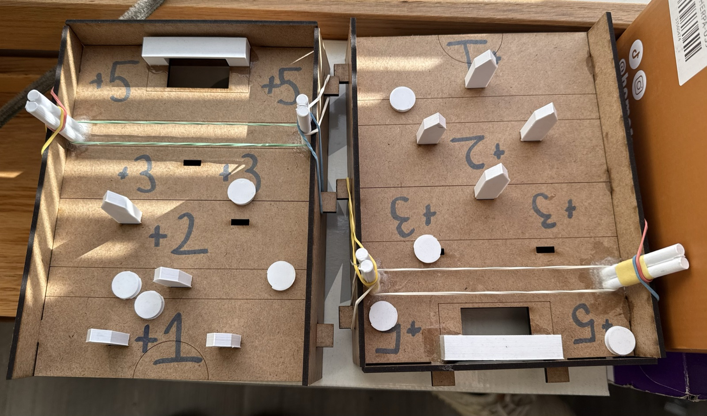

Hi! I'm an electrical and computer engineering student at Northeastern University. This past summer I was an electrical engineering intern at Piotech in Shanghai, troubleshooting and maintaining the PECVD and ALD thin film deposition tools used in semiconductor manufacturing, and iterating CAD models in SolidWorks. On my own time I built a servo-powered robotic arm, designed in SolidWorks, 3D printed, and driven by a Raspberry Pi Pico. Before that I led a three-person team through a laser-cut and 3D-printed tabletop game, from CAD package to a client-approved prototype. I like work where the hardware, the code, and the mechanical design all have to agree. Off the bench, I play competitively on Northeastern's club tennis team. Always up for a chat.
looking for a co-op, Jan – Aug 2027
Latest News
- Aug 2026 Wrapped up my internship at Piotech in Shanghai. I spent the summer on the production floor keeping PECVD and ALD deposition systems running, and learned how the tools work end to end, from the process chambers to the control subsystems.
- Aug 2026 Finished the servo-powered robotic arm: designed in SolidWorks, printed on a Bambu Lab printer, and calibrated through a lot of test runs until the joint movements were repeatable.
- May 2026 Started as an Electrical Engineering Intern at Piotech, a semiconductor equipment maker in Shanghai.
- Dec 2025 Delivered a fully functional tabletop board game to our clients after several rounds of 3D printing, laser cutting, and playtesting with a three-person team.
Experience
- Performed maintenance and troubleshooting on production machinery for PECVD and ALD thin film deposition systems used in semiconductor manufacturing, supporting equipment uptime on the production floor.
- Designed and iterated CAD models in SolidWorks, refining part geometry and assemblies across multiple revisions to meet manufacturing tolerances.
- Worked with engineers and mentors to understand system-level operation of deposition tools, from process chambers to control subsystems, and applied it to daily troubleshooting.
- Evaluated semiconductor equipment localization trends in China, including competitive positioning against NAURA, AMEC, and international suppliers.
- Documented equipment specifications, maintenance procedures, and test results for internal engineering records, and shadowed manufacturing, quality control, and R&D teams.
- Coursework: Circuits and Signals, Fundamentals of Engineering Algorithms, Fundamentals of Networks, Embedded Design/Enabling Robotics, Differential Equations & Linear Algebra, Physics II, Computing Fundamentals for Engineers.
- Competitive player on the Club Tennis team, and a student engineer in the American Society of Mechanical Engineers.
Projects
servo-powered robotic arm


A robotic arm designed and iterated in SolidWorks, then 3D printed in full on a Bambu Lab printer to check fit, range of motion, and structural integrity before final assembly. A Raspberry Pi Pico drives the servos for coordinated joint movement, with positioning and motion sequences calibrated through repeated testing for precision and repeatability. Every iteration and test result is documented to guide the next revision of the mechanics and controls.
tabletop board game

Led end-to-end development of a fully functional tabletop game for two clients. Produced the complete CAD package (part models, assemblies, and manufacturing drawings) in SolidWorks and AutoCAD, then ran prototyping cycles with 3D printing and laser cutting, reworking geometry and assembly around playtesting feedback and failure points. Ran design reviews for a three-person team, documenting decisions and revisions until we landed on a client-approved prototype.
Skills
- Tools SolidWorks, AutoCAD, Quartus Prime, LTspice, MATLAB, 3D Printing, Laser Cutting
- Hardware Raspberry Pi Pico, DE1-SoC, digital multimeter, oscilloscope, function generator
- Code Python, Java, C++, Kotlin · Linux, Windows
- Other SolidWorks CSWA certified · proficient in Mandarin Chinese